# Create a basic DAG: X causes Y
simple_dag <- dagify(
Y ~ X
)
# Visualize it
ggdag(simple_dag) +
theme_dag()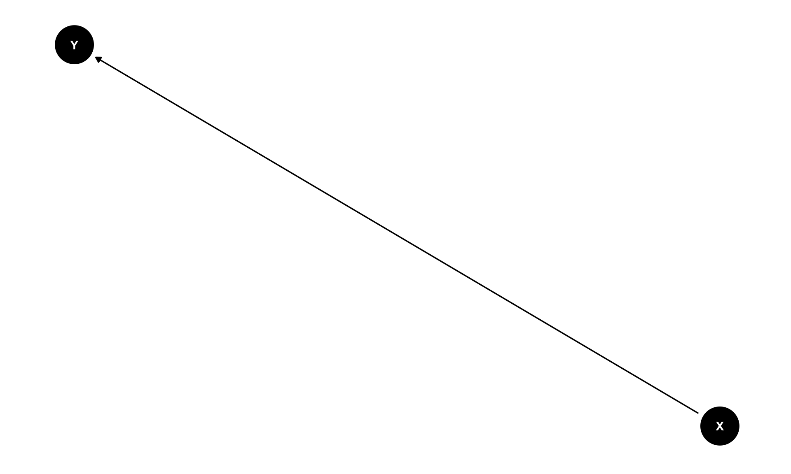
Visual Guide to Creating Directed Acyclic Graphs
Directed Acyclic Graphs (DAGs) are visual representations of causal relationships. They help us:
The ggdag package makes it easy to create beautiful DAGs using familiar ggplot2 syntax.
The simplest DAG shows one variable causing another.
# Create a basic DAG: X causes Y
simple_dag <- dagify(
Y ~ X
)
# Visualize it
ggdag(simple_dag) +
theme_dag()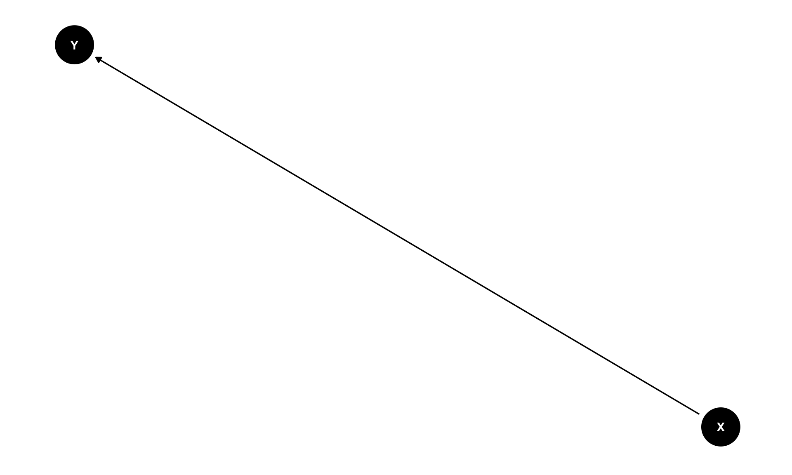
The arrow shows that X causes Y (X → Y).
Richard McElreath’s Statistical Rethinking (2nd ed., 2020) is a great resource on modeling in general, but also on causal inference. He breaks DAGs down into three fundamental causal structures that create confounding. Every complex DAG is built from combinations of these three patterns.
These examples follow McElreath’s framework, also covered in his excellent lecture series on YouTube.
fork_dag <- dagify(
Y ~ Z,
X ~ Z,
coords = list(
x = c(X = 1, Y = 3, Z = 2),
y = c(X = 1, Y = 1, Z = 2)
)
)
ggdag(fork_dag) +
theme_dag() +
labs(title = "Fork: Z is a common cause of X and Y")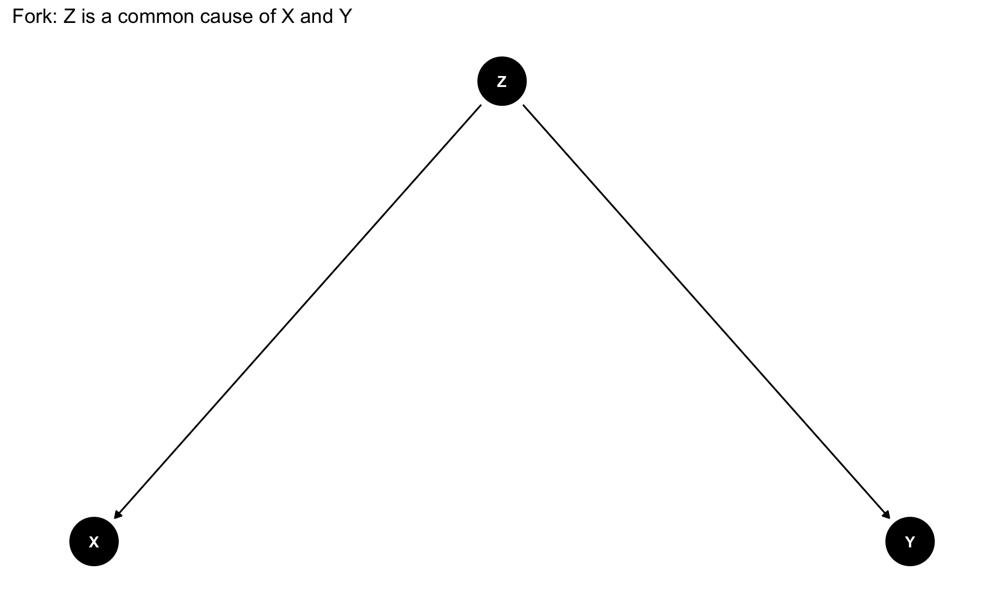
Strategy: Control for Z to block the non-causal path.
Z is a confounder: it causes both X and Y. If you don’t control for Z, the association between X and Y includes both the direct causal effect AND the indirect path through Z.
chain_dag <- dagify(
Y ~ M,
M ~ X,
coords = list(
x = c(X = 1, M = 2, Y = 3),
y = c(X = 1, M = 1, Y = 1)
)
)
ggdag(chain_dag) +
theme_dag() +
labs(title = "Chain: M mediates the effect of X on Y")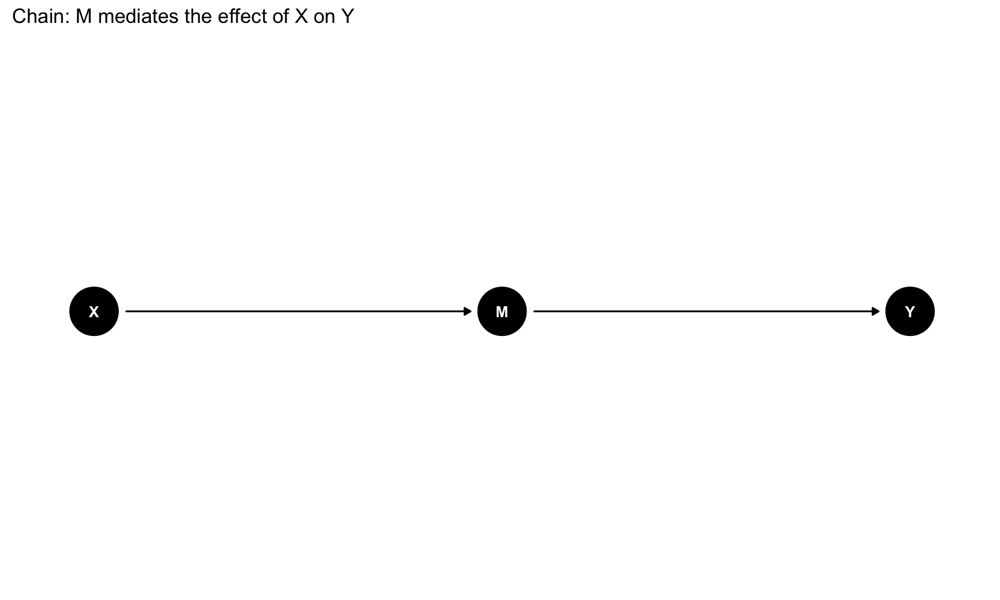
Strategy: Don’t control for M if you want the total effect of X on Y.
M is a mediator. It’s on the causal pathway from X to Y. Controlling for M blocks this path and gives you only the direct effect of X on Y, ignoring the indirect effect through M.
inverted_fork_dag <- dagify(
C ~ X + Y,
coords = list(
x = c(X = 1, Y = 3, C = 2),
y = c(X = 2, Y = 2, C = 1)
)
)
ggdag(inverted_fork_dag) +
theme_dag() +
labs(title = "Inverted Fork: C is a collider")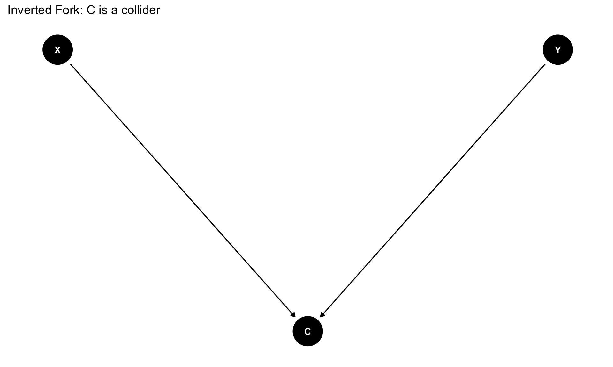
Strategy: Never control for C. It introduces an association between X and Y that isn’t “real.”
C is a collider: both X and Y cause it. Controlling for C creates a spurious association between X and Y even when there’s no causal relationship.
Use descriptive names instead of single letters:
# Create DAG with meaningful labels
labeled_dag <- dagify(
outcome ~ exposure + confounder,
exposure ~ confounder,
labels = c(
"exposure" = "Treatment",
"outcome" = "Health",
"confounder" = "Age"
)
)
ggdag(labeled_dag, text = FALSE, use_labels = "label") +
theme_dag()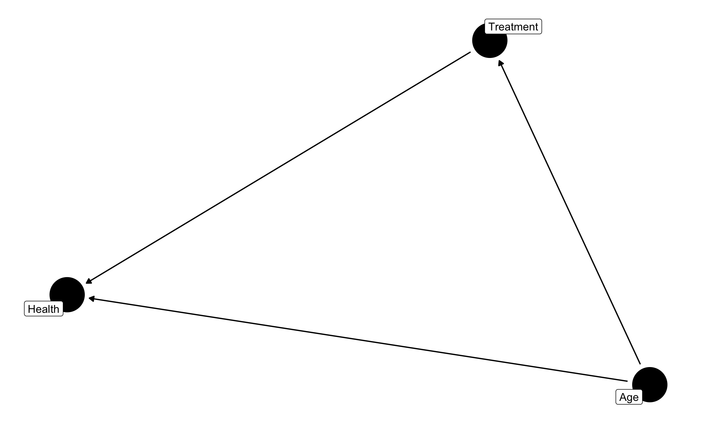
Control where nodes appear using coordinates:
# Specify exact coordinates for nodes
coords <- list(
x = c(exposure = 1, outcome = 3, confounder = 2),
y = c(exposure = 1, outcome = 1, confounder = 2)
)
positioned_dag <- dagify(
outcome ~ exposure + confounder,
exposure ~ confounder,
coords = coords,
labels = c(
"exposure" = "Treatment",
"outcome" = "Health",
"confounder" = "Age"
)
)
ggdag(positioned_dag, text = FALSE, use_labels = "label") +
theme_dag()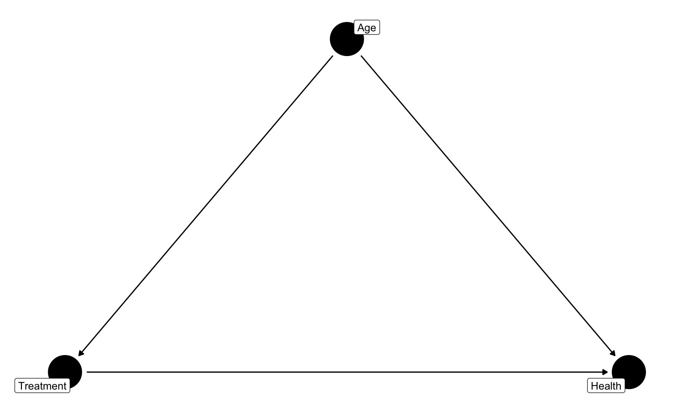
Since ggdag uses ggplot2, you can customize with familiar syntax:
ggdag(positioned_dag, text = FALSE, use_labels = "label") +
theme_dag() +
theme(
legend.position = "none",
plot.title = element_text(face = "bold", size = 16)
) +
labs(title = "Causal Model: Effect of Treatment on Health")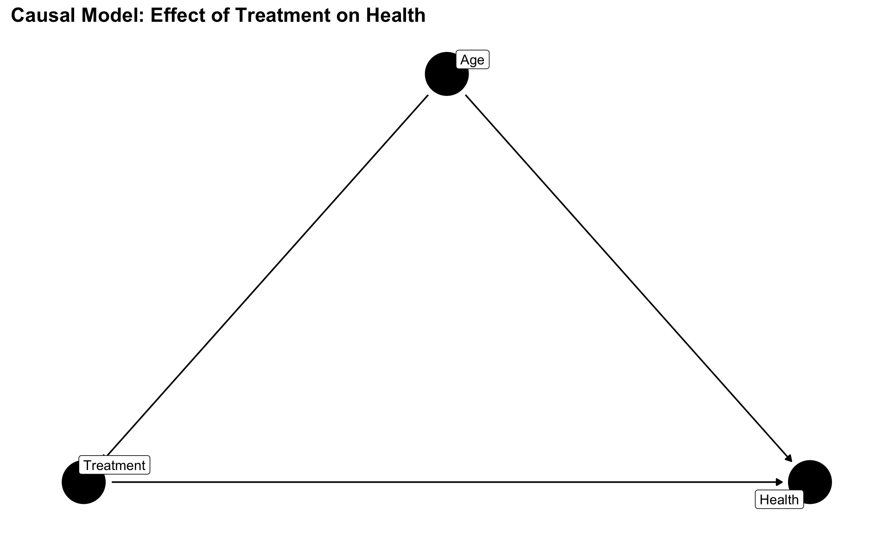
Let’s build a realistic DAG for healthcare access and outcomes:
healthcare_dag <- dagify(
health_outcome ~ healthcare_access + age + comorbidities + insurance,
healthcare_access ~ income + insurance + distance + provider_quality,
insurance ~ income + job_type,
income ~ education + age,
comorbidities ~ age + income,
provider_quality ~ geography,
distance ~ geography,
coords = list(
x = c(
health_outcome = 5,
healthcare_access = 3,
age = 1,
comorbidities = 3,
insurance = 2,
income = 1,
education = 0.5,
job_type = 0.5,
distance = 2.5,
provider_quality = 2.5,
geography = 1.5
),
y = c(
health_outcome = 3,
healthcare_access = 3,
age = 4,
comorbidities = 4,
insurance = 2,
income = 2,
education = 1,
job_type = 3,
distance = 1,
provider_quality = 2,
geography = 1
)
),
labels = c(
"health_outcome" = "Health\nOutcome",
"healthcare_access" = "Healthcare\nAccess",
"age" = "Age",
"comorbidities" = "Comorbidities",
"insurance" = "Insurance",
"income" = "Income",
"education" = "Education",
"job_type" = "Job Type",
"distance" = "Distance to\nProvider",
"provider_quality" = "Provider\nQuality",
"geography" = "Geography"
),
exposure = "healthcare_access",
outcome = "health_outcome"
)
ggdag(healthcare_dag, text = FALSE, use_labels = "label") +
theme_dag() +
theme(
plot.title = element_text(face = "bold", size = 14),
plot.subtitle = element_text(size = 11)
) +
labs(
title = "Causal Model: Healthcare Access and Health Outcomes",
subtitle = "Red = Exposure | Blue = Outcome"
)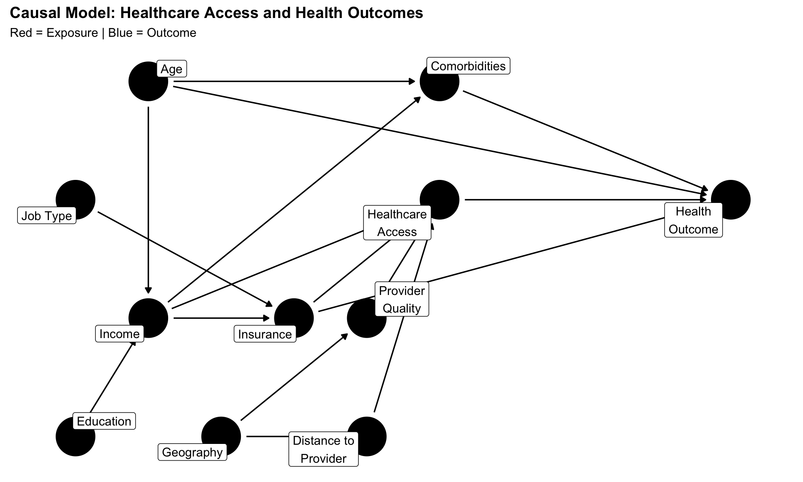
The ggdag package can automatically identify which variables to control for:
# Show what to adjust for
ggdag_adjustment_set(healthcare_dag, text = FALSE, use_labels = "label") +
theme_dag() +
labs(title = "What variables should we control for?")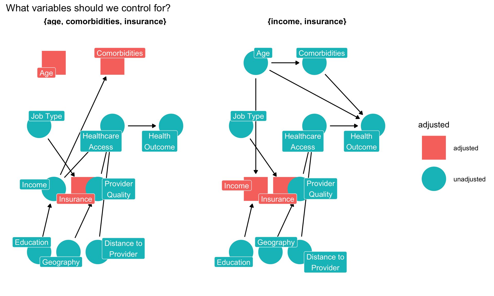
Green variables are in the adjustment set - control for these to estimate the causal effect.
Visualize all paths from exposure to outcome:
# Show all paths
ggdag_paths(healthcare_dag, text = FALSE, use_labels = "label") +
theme_dag() +
labs(title = "All Paths from Healthcare Access to Health Outcome")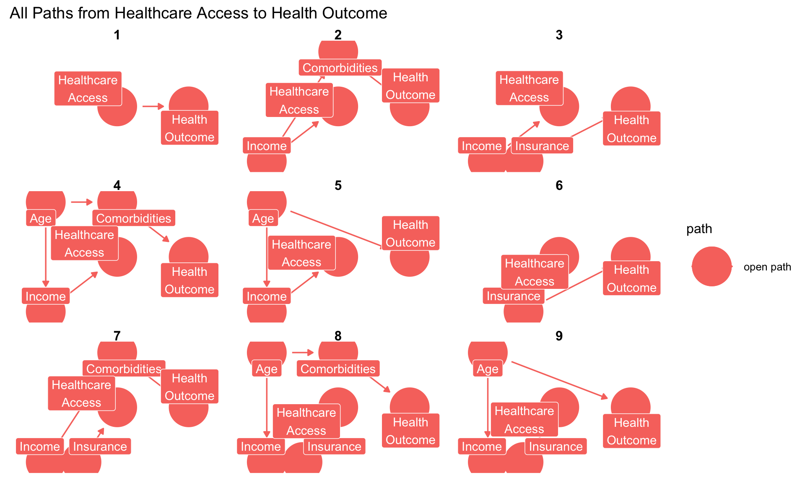
Identify confounding (backdoor) paths:
# Show backdoor paths that create confounding
ggdag_parents(healthcare_dag, "health_outcome", text = FALSE, use_labels = "label") +
theme_dag() +
labs(title = "What directly affects Health Outcome?")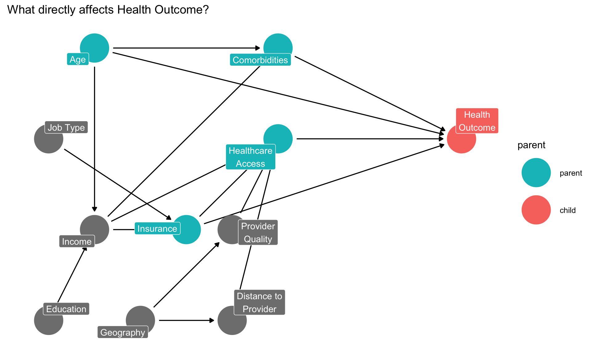
Books:
Software: